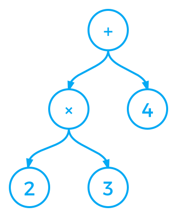

A program for parsing.
A computer program that breaks down text into recognized strings of characters for further analysis.
"2*3+4"
You can think in some examples of parsers in your everyday work.
A parser is a function.
We might need to return any unused input.
It might produce multiple results.
It might not produce a Tree, we can generalize to a value of any type.
A parser for things
Is a function from strings
To lists of pairs
Of things and strings
It always succeed, returning the given value without consuming any input.
It always fails.
Fails when the input is empty or consumes the first character otherwise.
p +++ q behaves as p if
p succeeds,
otherwise as q.
digit parses a character if it is a digit.
char parses a character if it is the given char.
many applies a parser zero or more times.
many1 applies a parser one or more times.
This expressions are build up from single digits and the operators of addition +, multiplication * and parenthesis.
expr = term + expr | term
term = factor * term | factor
factor = (expr) | digit
digit = 0 | 1 | 2 ...
ε means empty string
expr = term (+ expr | ε)
term = factor (* term | ε)
factor = (expr) | digit
digit = 0 | 1 | 2 ...
A monad m a is an abstract
data type m of computations
delivering a value of type a.
The monad is represented in terms of triplet:
(m a, return, >>=)
m a is a type constructor.
return is the computation for
returning a value of type.
>>= is the sequential
composition.